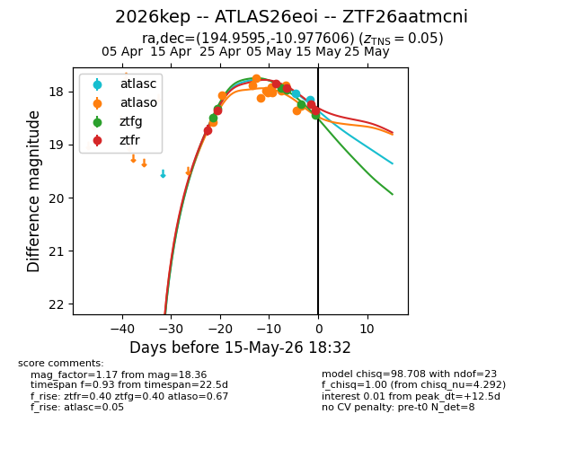
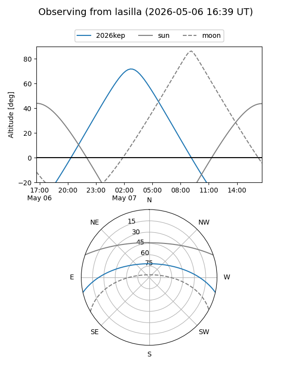
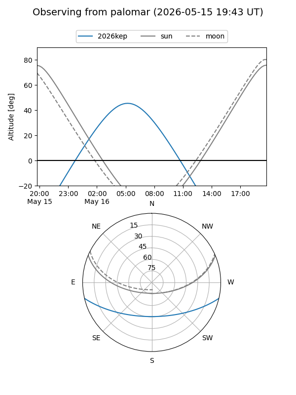
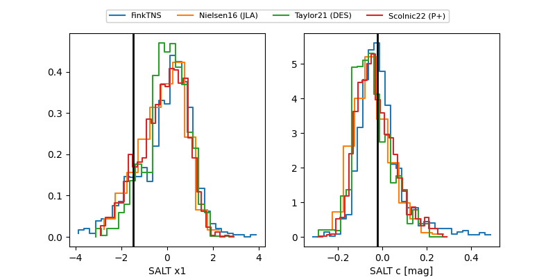

2026kep
Target 2026kep at 2026-05-15 18:34
Aliases and brokers:
FINK: link
Lasair: link
ALeRCE: link
TNS: link
YSE: link
alt names
ZTF26aatmcni (ztf,fink_ztf)
2026kep (tns,yse)
ATLAS26eoi (atlas)
Coordinates:
equatorial (ra, dec) = 194.9595,-10.97761
equatorial (HMS+DMS) = 12:59:50.28,-10:58:39.38
galactic (l, b) = (306.2697,+51.83969)
Flags:
confirmed ia
Photometry:
last atlasc=18.15, atlaso=18.28, ztfg=18.44, ztfr=18.36
2 atlasc, 13 atlaso, 6 ztfg, 6 ztfr detections
Lightcurve

Visibility


Additional plots
